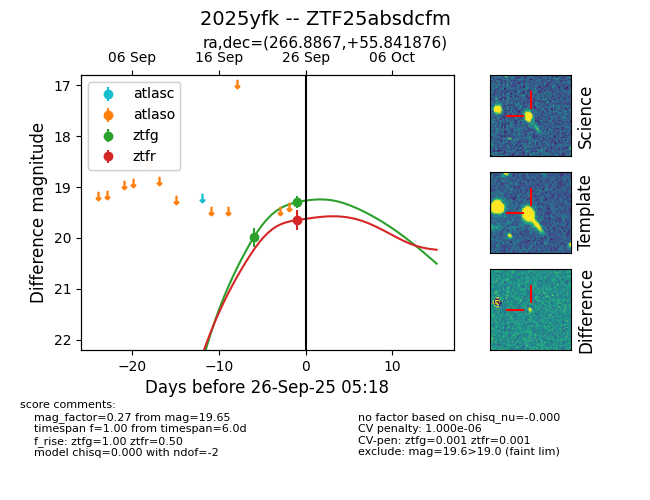
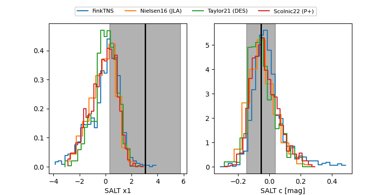

FINK: ZTF25absdcfm
Lasair: ZTF25absdcfm
ALeRCE: ZTF25absdcfm
TNS: 2025yfk
YSE: 2025yfk
ZTF25absdcfm (ztf,fink)
2025yfk (tns,yse)
equatorial (ra, dec) = (266.8867,+55.84188)
galactic (l, b) = (83.9069,+30.98630)


last ztfg=19.30, ztfr=19.65
2 ztfg, 1 ztfr detections